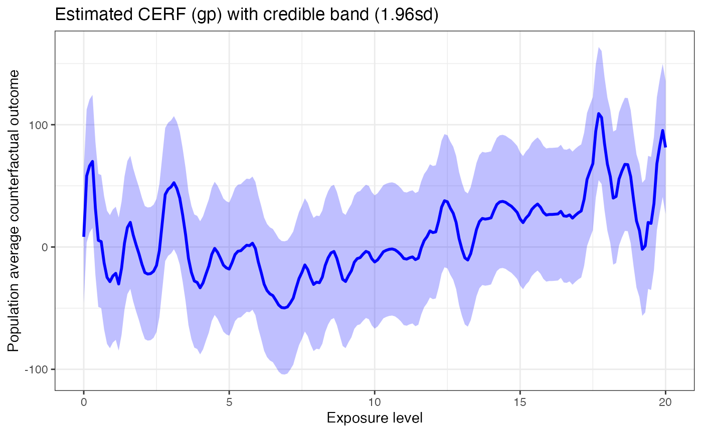
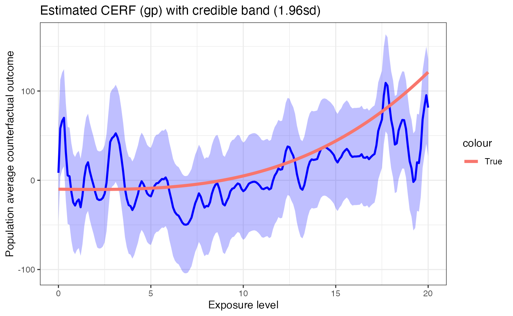
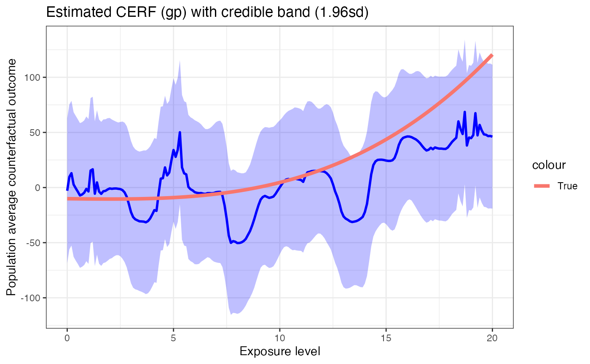
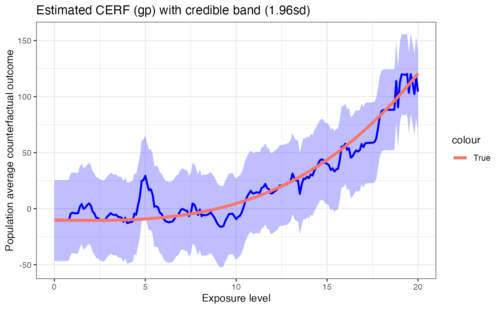

library(GPCERF)
#> Warning: replacing previous import 'vctrs::data_frame' by 'tibble::data_frame'
#> when loading 'dplyr'
library(ggplot2)In this vignette, we present an example of using full Gaussian processes approach in GPCERF to estimate the exposure response function (ERF) of a continuous exposure based on simulated data. We use a synthetic data generation function from the R package CausalGPS.
Generate Synthetic Data
We first generate a synthetic dataset with six covariates, one continuous exposure and one outcome. We consider two types of conditional distributions (normal and student’s t) of the exposure given covariates. For more details of the synthetic data generation, see this document. We then use a function tru_R to derive the actual ERF of this population at w=seq(0,20,0.1).
set.seed(134)
# Generate dataset with a normally distributed exposure given covariates
data_sim_normal <- generate_synthetic_data(sample_size = 400,
outcome_sd = 10,
gps_spec = 1)
# Generate dataset with a t-distributed with 2df exposure given covariates
data_sim_t <- generate_synthetic_data(sample_size = 400,
outcome_sd = 10,
gps_spec = 2)
tru_R<-function(w, sim.data){
design.mt <- model.matrix(~cf1+cf2+cf3+cf4+cf5+cf6-1, data = sim.data)
mean(apply(design.mt, 1, function(x){
-10 - sum(c(2, 2, 3, -1,2,2)*x) -
w*(0.1 - 0.1*x[1] + 0.1*x[4] + 0.1*x[5] + 0.1*x[3]^2) + 0.13^2*w^3
}))
}
erf_tru_normal <- sapply(seq(0,20,0.1), function(w) tru_R(w, data_sim_normal))
erf_tru_t <- sapply(seq(0,20,0.1), function(w) tru_R(w, data_sim_t))Estimate ERF with full Gaussian Processes
Train GPS Model
GPCERF will first convert the covariate values into a single composite score (GPS) and then use it to fit the Gaussian processes. We use the GPS estimation function in CasaulGPS (see here) to get the GPS model that maps covariates into GPS.
GPS_m_normal <- train_GPS(cov.mt = as.matrix(data_sim_normal[,-(1:2)]),
w.all = as.matrix(data_sim_normal$treat))
GPS_m_t <- train_GPS(cov.mt = as.matrix(data_sim_t[,-(1:2)]),
w.all = as.matrix(data_sim_t$treat))We then use estimate_cerf_gp to estimate the ERF of the expsoure w. We estimate the ERF at w = seq(0,20,0.1). The estimated ERF as well as its pointwise 95% credible band is visualized with a call to plot. We also plot the actual ERF on top of the estimated ERF.
Normally Distributed Exposure
w_all = seq(0,20,0.1)
data.table::setDT(data_sim_normal)
gp_res_normal <- estimate_cerf_gp(data_sim_normal,
w_all,
GPS_m_normal,
params = list(alpha = c(0.1),
beta=0.2,
g_sigma = 1,
tune_app = "all"),
nthread = 1)
plot(gp_res_normal) +
geom_line(data = data.frame(w = w_all, y = erf_tru_normal),
aes(x = w, y = y, color = "True"), size = 1.5)
We can see that the estimated curve follows the true ERF closely and the 95% credible band completely covers the true ERF.
T-distributed Exposure
data.table::setDT(data_sim_t)
gp_res_t <- estimate_cerf_gp(data_sim_t,
w_all,
GPS_m_t,
params = list(alpha = c(0.1),
beta=0.2,
g_sigma = 1,
tune_app = "all"),
nthread = 1)
plot(gp_res_t) +
geom_line(data = data.frame(w = w_all, y = erf_tru_t),
aes(x = w, y = y, color = "True"), size = 1.5)
The results look very similar to the case where the exposure is normally distributed. The only difference might be that when the exposure is t-distributed, the estimated curve tends to be less smooth.